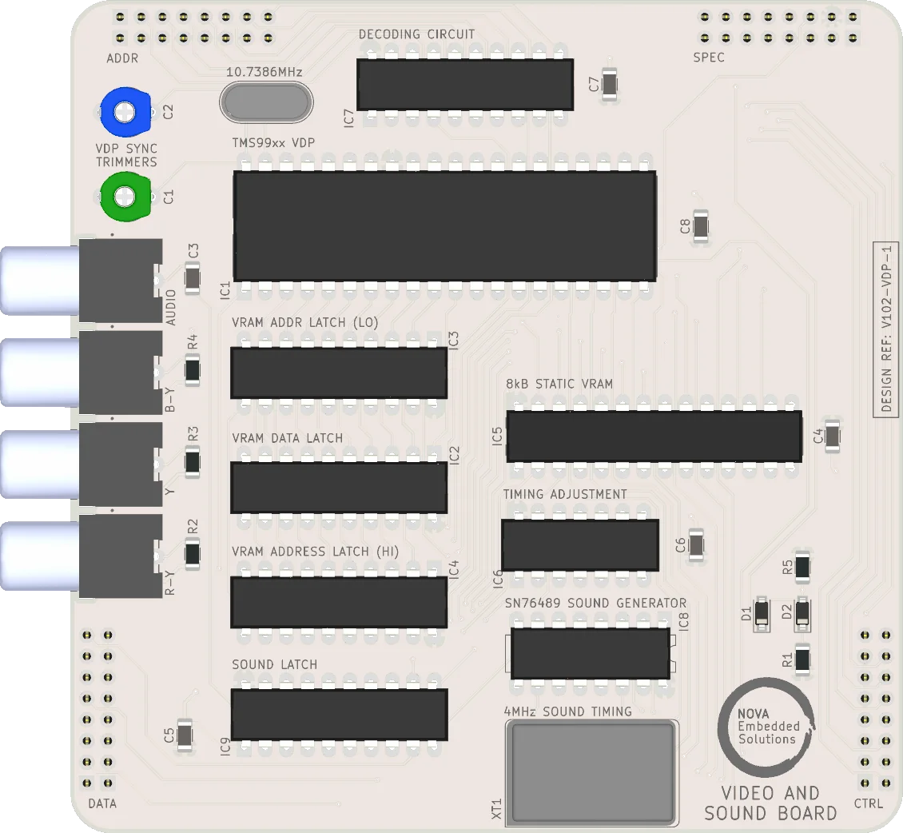

V102-VDP-1
Video + sound
The MTX's video and sound chips, with static RAM where the obsolete DRAM used to be.
- Video
- TMS9929A or TMS9918A
- VRAM
- 16 K, in a 62256 SRAM
- Sound
- SN76489
- Out
- Component or composite video, audio
- Glue
- GAL16V8

What's on the board

How it works
- TMS9929A (component) or TMS9918A (composite) VDP at ports 01h/02h, outputs on RCA sockets
- 16 K VRAM in one 62256 SRAM behind three 74HC574 latches
- SN76489 sound (03h/06h) at 4 MHz, AC-coupled to RCA
- Drives bus 4M (the MTX's CPU clock) and pulses OUT0 on OUT (00h) for the MTX page register
What it took
- Replaced obsolete 4116 DRAMs: row latch on RAS, column latch on CAS, write-data latch, all on one SRAM
- A Schmitt-inverter delay chain puts the column-latch edge where the VDP's address is valid
- Same video and sound chips as the MTX512, so software is compatible
Next revision
- HCT parts where NMOS VDP outputs drive HC inputs
- Video buffers with 75 Ω matching; bigger audio coupling cap
- Mute sound at reset; 100 nF decoupling
- VDP registers can be hit while the programmer holds the bus
Schematic
Tap to open it full screen, then pinch, scroll or drag to explore. It stays sharp at any zoom.
Photo and files
Live photo: board-vdp.jpgThe built Video + soundStraight down or three-quarter view, chips fitted, plain background.
Downloads
Read the PLD source, V102-VDP-00
Name z80-VDP-out0 ; PartNo 00 ; Date 12/1/2023 ; Revision 01 ; Designer Nigel ; Company xxx ; Assembly None ; Location ; Device g16v8a ; /* *************** INPUT PINS ******************** */ PIN 1 = IORQB ; PIN 2 = M1B ; PIN 3 = A0 ; PIN 4 = A1 ; PIN 5 = A2 ; PIN 6 = A3 ; PIN 7 = A4 ; PIN 8 = A5 ; PIN 9 = A6 ; PIN 11 = A7 ; PIN 18 = RDB ; PIN 19 = WRB ; FIELD ADDR = [A7..A0] ; /* *************** OUTPUT PINS ******************** */ PIN 17 = OUT6 ; /* data write to sound chip pos edge trigger */ PIN 16 = VDPRD ; /* read from one of 2 vdp registers */ PIN 15 = VDPWR ; /* write to one of 2 vdp registers */ PIN 14 = IN3 ; /* strobe the data from the latch to the sound chip */ PIN 12 = OUT0 ; /* chip select for mtx page latch on myx board */ /* *************** LOGIC FORMULA ******************** */ OUT6 = (ADDR:6 & !IORQB & !WRB) ; // out(06h) !IN3 = (ADDR:3 & !IORQB & !RDB) ; // in(03h) !VDPRD = (ADDR:2 & !IORQB & !RDB) # (ADDR:1 & !IORQB & !RDB) ; // in(02h or 01h) !VDPWR = (ADDR:2 & !IORQB & !WRB) # (ADDR:1 & !IORQB & !WRB) ; // out(02h or 01h) OUT0 = (ADDR:0 & !IORQB & !WRB) ; // out(0) is page latch on mtx board connected if required through spec connector